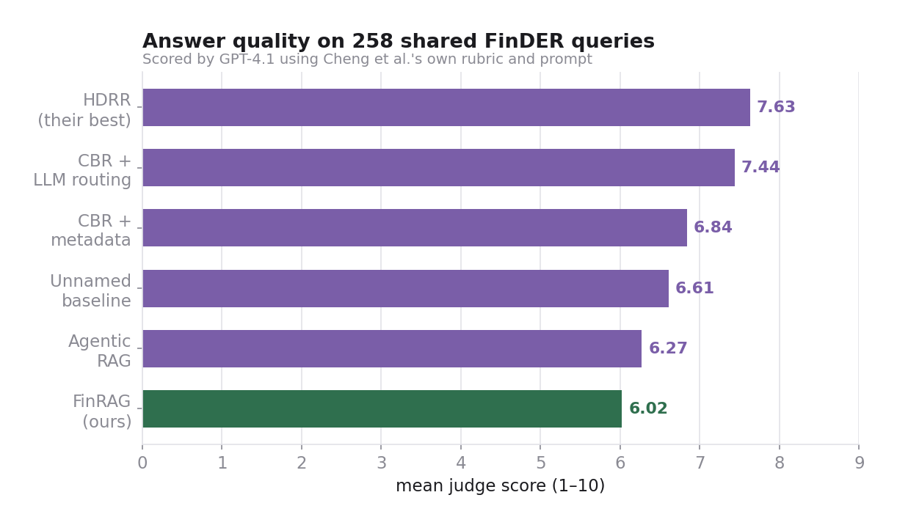
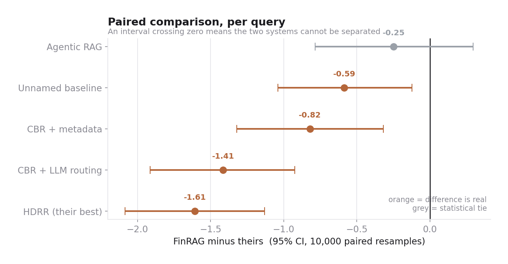
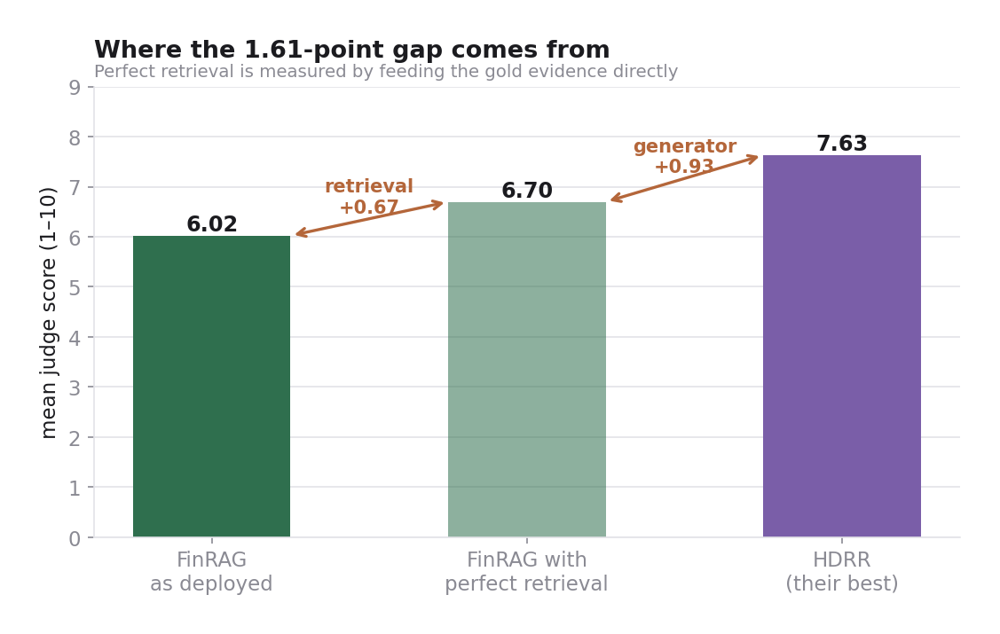
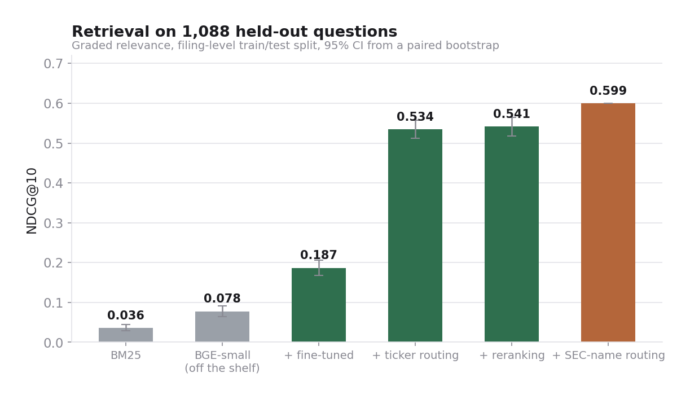
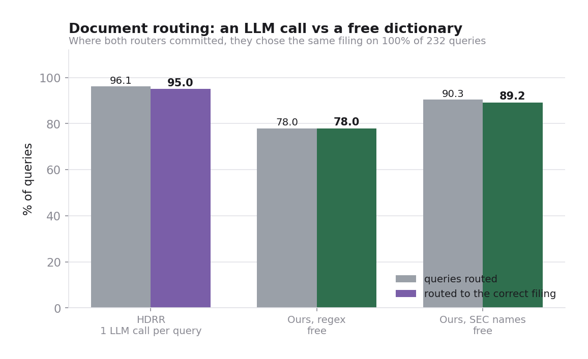
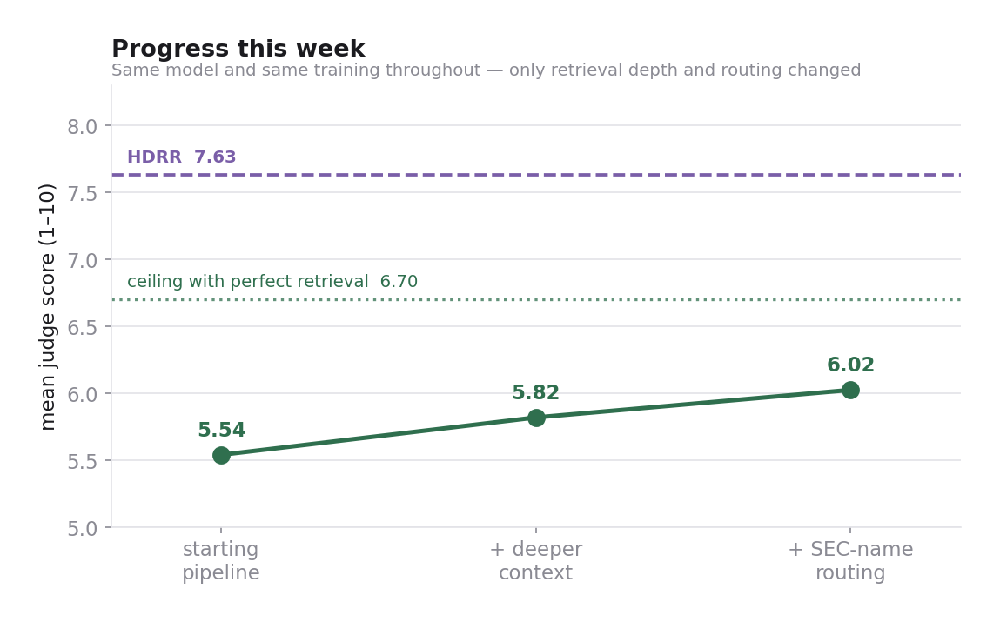
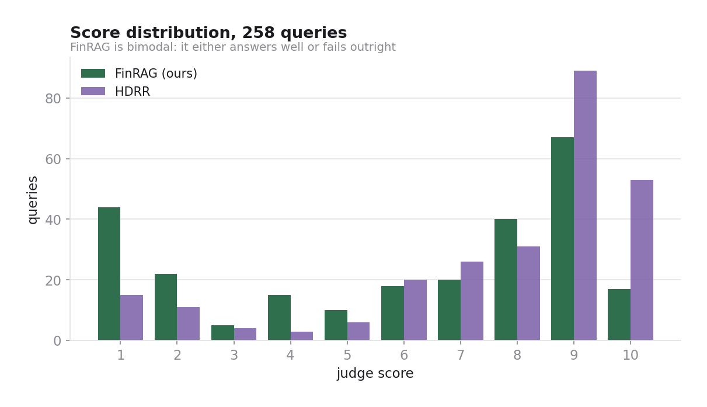

FinRAG — results against HDRR (2026)
Haroon M Bilal · Muhammad Bin Sarwar · 28 October 2026
On 258 held-out FinDER queries scored by Cheng et al.'s own GPT-4.1 judge with their own rubric and prompt, FinRAG reaches 6.02/10 against HDRR's 7.64. Our grader was verified against 40 of their published answers: 90% exact agreement, 100% within one point, r = 0.993. The 1.61-point gap is 0.68 retrieval and 0.94 generator capacity. On retrieval itself — which their paper never reports — FinRAG reaches NDCG@10 0.599, and a zero-cost router matches their per-query LLM router's decision on 100% of queries where both commit.

Same 258 held-out queries, same judge, same rubric. FinRAG runs entirely on one laptop GPU; every other system generates its answers with a frontier API model.

Every system is scored on identical queries, so the differences can be resampled directly. FinRAG is statistically tied with Agentic RAG and trails the rest.

0.67 points are lost to retrieval, which is fixable. 0.93 points remain even with perfect evidence in front of the model — that is a 7B model on a laptop against a frontier API model, i.e. a hardware budget, not a method flaw.

HDRR publishes only end-to-end judge scores, so there is no published retrieval number on FinDER to compare against. Every step here is measured on filings never seen in training.

HDRR calls an LLM on every query to extract the company ticker. Replacing it with SEC's public company-name table plus an acronym stoplist recovers most of that capability and costs nothing to run.

No retraining was involved: 5.54 → 6.02 came from feeding the generator more retrieved context and fixing which company it searches.

FinRAG scores 8+ on 48% of queries, close to HDRR's quality when it works. Its losses are concentrated in outright failures rather than mediocre answers, which is the signature of missing evidence rather than weak reasoning.